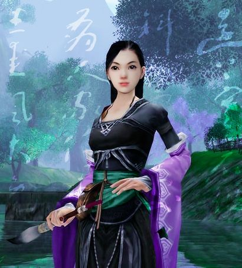
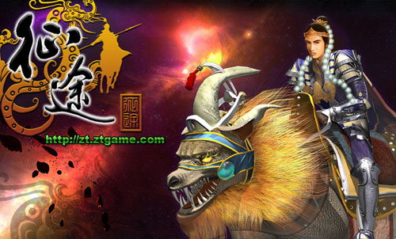

玩游戏的孩子，"男的都变小偷，女的都变三陪小姐".
开发问题
我们已经习惯于对每一款国产游戏大骂“垃圾。”常见的指责方式，无外乎说“这个是抄袭XXX！”其实我们就拿被做对比最多的WOW来举例，除了剧情外，游戏中的元素大体全延用了D&D，有些甚至连物品名称都没改。只不过WOW是西方网络游戏里在中国最成功的一个，很多玩家甚至是第一次接触到西方题材的游戏，因此将WOW作为一个范本或者说本尊，但这是错误的。
国产游戏学习WOW之风，更该看成是一次对西方经典游戏整体的学习，只能说在此之前我们的游戏开发在各方面做得都不完善，现在有一款在各个细节做得几乎都很到位的样品摆在面前，认真学习和模仿是应该的，只是不要全部把模型复制一遍改个游戏名字就好。
另一个指责是现在最流行的，许多枪手都爱用这个题材写产业文章。
“一个引擎做多款游戏，短时间出游戏多，不能象暴雪一样5年磨一剑出精品。”
骂得好，但问题出在哪里？
前面已经说过，中国网络游戏开发基本是从0开始，暂且不说设备，技术，只是人才到现在依然是个大缺口，更不用提即便找到了人才也没有开发经验。
而且中国游戏开发商们就倒霉在这个5年磨一剑上。因为现在的游戏市场变化很快，你根据当前的市场情况进行研发，但2年后可能会发现已经与市场完全脱节。或许2007年《天下二》的回炉就说明了问题。并且自己研发5年，需要做极大的投入，而回报必须更远远大于这个长时间的投入才能让开发者们更有信心。
〈剑侠情缘三〉尴尬的在线已经证明了这款5年磨出来的精品并没有得到玩家买帐。玩家们都在要求开发时间长做精品，但真的有厂商那么做了，那些整天喊着为什么不做精品的玩家们却不知道去了哪里，或者与其他玩家一样再鸡蛋里挑骨头对剑三大骂。

那么，在目睹了这些后，还有哪个厂商愿意或是敢于去冒这个风险？冒着5年内巨大的投入没有任何收入并且获得一个无人来玩的结局？
这肯定不是玩家的问题，玩家在大叫精品时可能自己也不知道他们要的精品是什么，他们很多人就是把一款新的游戏与WOW做对比，只要比不上WOW，那么这款游戏就是垃圾。如果比得上，也是抄袭WOW。玩家花钱是来玩的，无论他们喊什么，喊得对与错，都是玩家的权利，厂商不可能把自己对市场评估的错误推到玩家头上。开发一款游戏要先进行市场定位，即将要开发的题材与类型的游戏适合哪个阶层和年龄段的玩家群体，随后再决定投入的资金和人力以及开发周期。但在整个中国社会都处在浮躁期的时候，我们能指望更浮躁的中国游戏市场在5年内一成不变？
剑3的在线，更充分说明了一个事实：玩家越喊什么，厂商越不能听什么。
与剑3截然相反的是征途。
征途的成功是游戏的另一种成功，作为老玩家来说，很难承认征途是游戏，更多是将其当作一个成功的虚拟产品。实际上，征途的胜利与游戏本身没有太多关系，而是史玉柱将成就感更加廉价地送给了玩家。
我们就说征途发工资，对于大笔花费RMB的玩家来说，是根本不会在乎那点虚拟货币的。这些所谓的工资发给真正的免费玩家，前提是他们必须长时间停留在游戏里。那么目的何在？自然是让他们配那些RMB玩家玩，说白了，就是继续让那些有钱的玩家爽。
这样就形成了一个多赢的循环：RMB玩家花费大笔RMB，尽情地屠宰免费玩家。史玉柱从RMB玩家手中赚得利润，同时用虚拟货币作为工资发给免费玩家，免费玩家领到虚拟货币，继续让RMB玩家屠杀。
在这个循环中，RMB玩家获得快感，免费玩家获得虚拟工资，史玉柱获得RMB。

如果说征途100万在线，假设按照以往在线X4是活跃用户的话，至少有400万玩家，如果按照我们常理解的二八制的计算，那么有80万玩家是花钱相对多的，其中可能花钱比较狠的人有10万。剩下320万玩家全变成了史玉柱雇来陪那10万玩家爽的员工，并且支付的只是虚拟货币。
这个就是征途发工资的核心所在，而真正的精华，则是剥出的蟹黄。
剥出的蟹黄
史玉柱与暴雪分别代表了目前网络游戏的两个极端：洗螃蟹的过程和吃螃蟹的服务
暴雪走的路是游戏性，正如吃螃蟹，蟹黄鲜美，但需要先洗，洗的同时还要小心被螃蟹钳夹住，然后再蒸，蒸过后再掰开螃蟹壳才能吃到。如果我们心细，还知道把正中的一个五边形状的白色物质拿掉，然后告诉旁人那就是法海，还会想到白娘子，雷峰塔，还有那场伟大的人妖之恋。娱乐性，文化性都有了。这是享受过程。
征途走的路是人性，最快速度给人成就感并培养用户的游戏习惯（例如自动寻路）。依然是吃螃蟹，只不过要你自己去高档饭店，花费比自己吃螃蟹好几倍的钱，在菜谱上找螃蟹，盘子端上来就是已经做好了的蟹黄蟹肉，你要做的只是吃。没有别的，就是一个字：爽。这是花钱买服务，这是享受服务。
暴雪研究的是游戏，在于过程。史玉柱研究的是人，在于服务。两者都将自己这一路线推到了极至，因此都获得了成功。